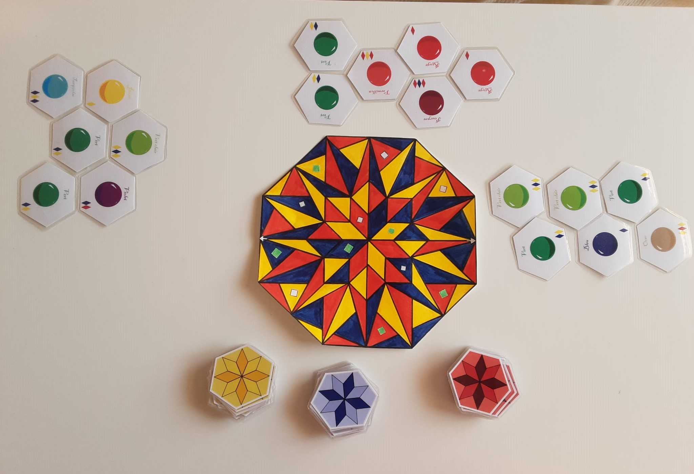

J'aime créer
...et voici quelques-uns de mes projets
À commencer par des vidéos que j'ai pu monter :
À vos couleurs !
Résultat de ma participation à un atelier de création de jeux de sociétés, ce jeu a pour but de plonger les joueurs dans un univers coloré alors qu’ils se lancent dans leur mission d’artisans vitraillistes.
Cartes métiers
Ces cartes, prenant pour modèle les cartes pokémon ont eu pour but de présenter les différentes possibilités professionnelles dans le domaine du numérique. Elles se sont inscrites dans un jeu de piste que j’ai pu créer avec lors de mon service civique chez FACE Alsace et lors du stage d’observation d’élèves de 3ème que nous avons encadrés pendant une semaine.